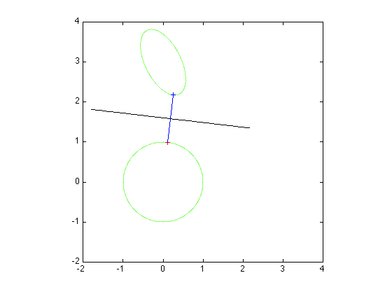

% Joelle Skaf - 11/06/05 % (a figure is generated) % % Finds a separating hyperplane between 2 ellipsoids {x| ||Ax+b||^2<=1} and % {y | ||Cy + d||^2 <=1} by solving the following problem and using its % dual variables: % minimize ||w|| % s.t. ||Ax + b||^2 <= 1 : lambda % ||Cy + d||^2 <= 1 : mu % x - y == w : z % the vector z will define a separating hyperplane because z'*(x-y)>0 % input data n = 2; A = eye(n); b = zeros(n,1); C = [2 1; -.5 1]; d = [-3; -3]; % solving for the minimum distance between the 2 ellipsoids and finding % the dual variables cvx_begin variables x(n) y(n) w(n) dual variables lam muu z minimize ( norm(w,2) ) subject to lam: square_pos( norm (A*x + b) ) <= 1; muu: square_pos( norm (C*y + d) ) <= 1; z: x - y == w; cvx_end t = (x + y)/2; p=z; p(1) = z(2); p(2) = -z(1); c = linspace(-2,2,100); q = repmat(t,1,length(c)) +p*c; % figure nopts = 1000; angles = linspace(0,2*pi,nopts); [u,v] = meshgrid([-2:0.01:4]); z1 = (A(1,1)*u + A(1,2)*v + b(1)).^2 + (A(2,1)*u + A(2,2)*v + b(2)).^2; z2 = (C(1,1)*u + C(1,2)*v + d(1)).^2 + (C(2,1)*u + C(2,2)*v + d(2)).^2; contour(u,v,z1,[1 1]); hold on; contour(u,v,z2,[1 1]); axis square plot(x(1),x(2),'r+'); plot(y(1),y(2),'b+'); line([x(1) y(1)],[x(2) y(2)]); plot(q(1,:),q(2,:),'k');
Calling Mosek 9.1.9: 21 variables, 8 equality constraints
------------------------------------------------------------
MOSEK Version 9.1.9 (Build date: 2019-11-21 11:32:15)
Copyright (c) MOSEK ApS, Denmark. WWW: mosek.com
Platform: MACOSX/64-X86
Problem
Name :
Objective sense : min
Type : CONIC (conic optimization problem)
Constraints : 8
Cones : 5
Scalar variables : 21
Matrix variables : 0
Integer variables : 0
Optimizer started.
Presolve started.
Linear dependency checker started.
Linear dependency checker terminated.
Eliminator started.
Freed constraints in eliminator : 0
Eliminator terminated.
Eliminator - tries : 1 time : 0.00
Lin. dep. - tries : 1 time : 0.00
Lin. dep. - number : 0
Presolve terminated. Time: 0.00
Problem
Name :
Objective sense : min
Type : CONIC (conic optimization problem)
Constraints : 8
Cones : 5
Scalar variables : 21
Matrix variables : 0
Integer variables : 0
Optimizer - threads : 8
Optimizer - solved problem : the primal
Optimizer - Constraints : 2
Optimizer - Cones : 3
Optimizer - Scalar variables : 9 conic : 9
Optimizer - Semi-definite variables: 0 scalarized : 0
Factor - setup time : 0.00 dense det. time : 0.00
Factor - ML order time : 0.00 GP order time : 0.00
Factor - nonzeros before factor : 3 after factor : 3
Factor - dense dim. : 0 flops : 4.30e+01
ITE PFEAS DFEAS GFEAS PRSTATUS POBJ DOBJ MU TIME
0 3.0e+00 0.0e+00 4.0e+00 0.00e+00 1.000000000e+00 -2.000000000e+00 1.0e+00 0.00
1 4.4e-01 5.6e-16 4.3e-01 8.26e-02 1.052440158e+00 6.189912896e-01 1.5e-01 0.01
2 9.1e-03 1.1e-15 9.4e-04 8.44e-01 1.196004593e+00 1.180800462e+00 3.0e-03 0.01
3 1.2e-06 3.7e-14 1.5e-09 9.94e-01 1.192441852e+00 1.192439979e+00 3.9e-07 0.01
4 2.4e-08 4.2e-13 4.3e-12 1.00e+00 1.192441370e+00 1.192441332e+00 8.1e-09 0.01
5 1.6e-09 4.1e-12 7.6e-14 1.00e+00 1.192441358e+00 1.192441356e+00 5.4e-10 0.01
Optimizer terminated. Time: 0.01
Interior-point solution summary
Problem status : PRIMAL_AND_DUAL_FEASIBLE
Solution status : OPTIMAL
Primal. obj: 1.1924413584e+00 nrm: 3e+00 Viol. con: 3e-09 var: 0e+00 cones: 0e+00
Dual. obj: 1.1924413558e+00 nrm: 1e+00 Viol. con: 0e+00 var: 6e-12 cones: 8e-17
Optimizer summary
Optimizer - time: 0.01
Interior-point - iterations : 5 time: 0.01
Basis identification - time: 0.00
Primal - iterations : 0 time: 0.00
Dual - iterations : 0 time: 0.00
Clean primal - iterations : 0 time: 0.00
Clean dual - iterations : 0 time: 0.00
Simplex - time: 0.00
Primal simplex - iterations : 0 time: 0.00
Dual simplex - iterations : 0 time: 0.00
Mixed integer - relaxations: 0 time: 0.00
------------------------------------------------------------
Status: Solved
Optimal value (cvx_optval): +1.19244
